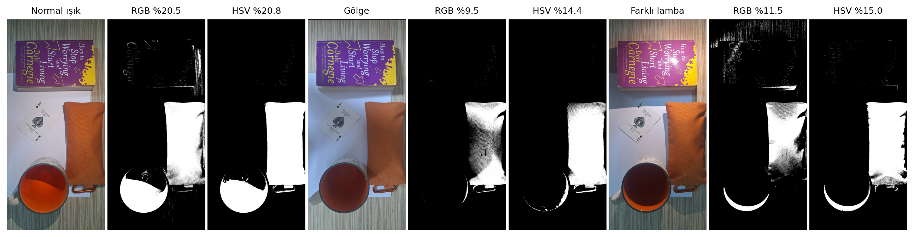
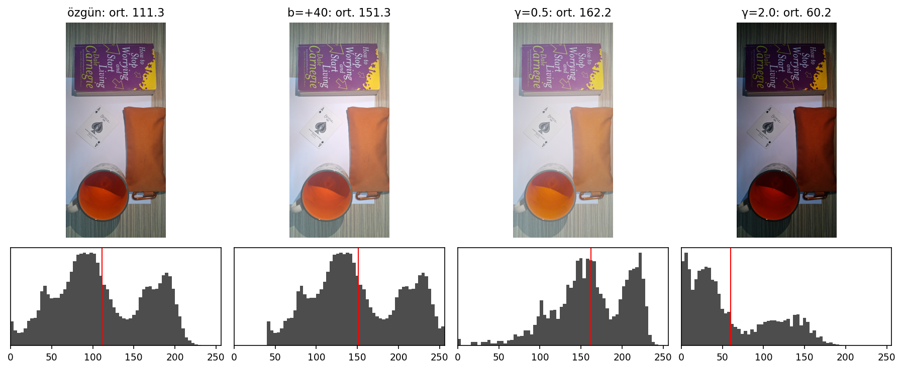
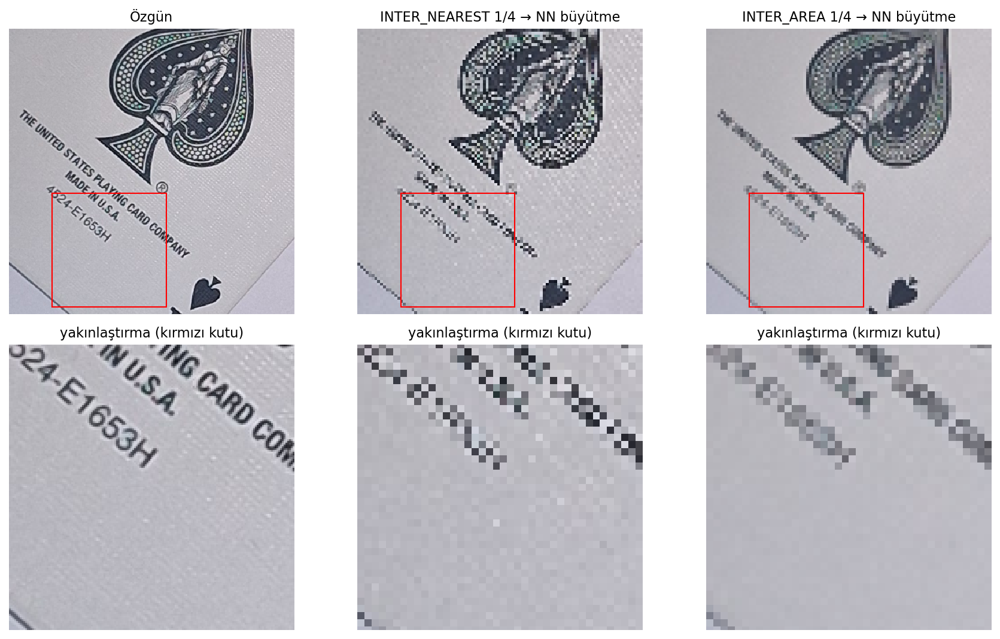

Sahne ve çekim. Hedef nesne turuncu kumaş kalemlik. Yanında beyaz A4 kâğıt, küçük puntolu yazısı olan bir iskambil kartı, sarı-mor bir kitap ve içinde turuncu çay olan bir kupa var; masa çizgili ahşap.
Üç fotoğraf Samsung Galaxy A54 ile 10 s arayla çekildi: normal oda ışığı, gölge (sahneye düşen ışık engellendi) ve sıcak renkli masa lambası.
EXIF'e göre otomatik pozlama ve otomatik beyaz dengesi açıktı. Pozlama süresi × ISO, normale göre gölgede 2,64×, lambada 0,80× oldu. Bu yüzden "yalnızca ışık değişti" diyemiyorum: kamera kazancı ve renk dengesi de değişti.
Telefon çekimler arasında biraz kaydı. Gölge ve lamba fotoğraflarını normale SIFT + RANSAC homografisiyle hizaladım (ölçek 1,018 / 1,036; ortanca hata 0,96 / 0,86 px). Hizalamada INTER_NEAREST kullandığım için yeni renk değeri üretilmedi. Alan oranlarını üç fotoğrafın ortak görüş alanı (karenin %99,8'i) üzerinden hesapladım.

img.shape = (4080, 1884, 3), uint8, değer aralığı 0–255. Erişim img[y, x, kanal] şeklinde: P1 için img[1850, 1250] OpenCV'de (B, G, R) = (35, 74, 159) verdi; cvtColor(BGR2RGB) sonrası (159, 74, 35). img[x, y] yazınca başka bir piksel okundu.
| Piksel (x, y), 5×5 ort. | Normal (R,G,B) | Gölge | Lamba |
|---|---|---|---|
| P1 (1250, 1850) | 165, 80, 40 | 132, 77, 62 | 195, 107, 55 |
| P2 (1650, 2300) | 140, 66, 27 | 108, 60, 38 | 124, 60, 28 |
| P3 (1400, 2900) | 134, 60, 25 | 111, 61, 39 | 115, 57, 31 |
Tahmin: Gölgede R, G ve B birlikte düşecek; sıcak lambada B orantısız düşecek. Ölçüm: Gölgede R düştü, G yaklaşık sabit kaldı, B arttı. Lambada üç kanal da arttı; kalemliğin ortanca rengi (175, 87, 41) → (171, 88, 41) ile neredeyse aynı kaldı. İki tahmin de tutmadı.
Ne gördüm / neden / kontrol: Gölgedeki yüzey doğrudan ışık yerine mavimsi dağınık ortam ışığıyla aydınlanıyor; kamera da kazancı 2,64× artırarak karanlığı kısmen telafi etti. Lambada otomatik beyaz dengesi sıcak ışığı nötrledi; geriye yalnızca konuma bağlı parlaklık farkı kaldı (lamba sol üstte: P1 1,25×, P2 0,91×). Kontrol: Pro modda ISO, enstantane ve WB kilitli olarak yeniden çekip aynı pikselleri ölçmek.
| Fotoğraf | Uzay | Alan oranı | Ref. bölge kaps. | Seçimlerin geldiği yer |
|---|---|---|---|---|
| Normal | RGB | %20,54 | %100 | kalemlik %67, çay %27 |
| Normal | HSV | %20,78 | %100 | kalemlik %72, çay %26 |
| Gölge | RGB | %9,46 | %57,8 | kalemlik %98 |
| Gölge | HSV | %14,38 | %100 | kalemlik %96 |
| Lamba | RGB | %11,46 | %99,8 | kalemlik %78, çay %9, kitap %7, ahşap %5 |
| Lamba | HSV | %15,04 | %100 | kalemlik %92, çay %7, ahşap %0 |
Tahmin: Gölgede RGB maskesi küçülecek, HSV ton kanalı sayesinde daha az etkilenecek; lambada açık renkli yüzeyler eşiği geçecek. Ölçüm: Gölgede RGB maskesi %20,5'ten %9,5'e düştü ve referans bölgenin yalnızca %58'ini seçti; HSV %100 kapsamayı korudu. Tuttu. Lambada kâğıt değil, ahşap ve kitap eşiği geçti, o da yalnızca RGB'de. Kısmen tuttu.
Ne gördüm / neden: Gölgede kalemliğin ortancası (175, 87, 41) → (117, 65, 43) oldu; R alt eşik 115'e dayandı. HSV'de ton sabit kaldı (H 10 → 9), ama S 195 → 162'ye, P1'de 132'ye indi. Bu değer S ≥ 125 sınırına çok yakın: HSV'yi yalnızca bıraktığım pay kurtardı, HSV her aydınlatma değişimine dayanıklı değil. HSV alanının %20,8'den %14,4'e düşüşünün çoğu kalemlikten değil, gölgede karardığı için seçilmeyen çaydan geliyor: yalnızca kalemlik kutusunda HSV oranı %14,9 → %13,8. Alan oranı doğruluk değildir. Kontrol: S ve V alt eşiklerini değiştirip HSV kapsamının hangi değerde çöktüğünü ölçmek; çayı ayırmak için şekil ölçütü (en–boy oranı, doluluk) eklemek.

J = clip(I + 40) ve J = 255·(I/255)^γ; dönüşümler float üzerinde yapıldı, [0, 255]'e kırpıldı, yuvarlandı. Kırmızı çizgi ortalamayı gösterir.| Dönüşüm | Ön tahmin (ortalama) | Ölçülen | 255'te kırpılan |
|---|---|---|---|
| Özgün | — | 111,32 | %0,01 |
| b = +40 | 151,32 | 151,30 | %0,46 |
| γ = 0,5 | 168,49 | 162,22 | %0,01 |
| γ = 2,0 | 48,60 | 60,22 | %0,01 |
Tahmin: +40 kaydırması 255'te kırpılma yüzünden ortalamayı 40'tan az artıracak ve en çok beyaz kâğıt kırpılacak. Gama sonrası ortalama ≈ 255·(m/255)^γ olacak. Ölçüm: Artış +39,98 oldu; 215'i aşan kanal değerlerinin oranı yalnızca %0,39. Tahmin tutmadı. Gamada yön doğru çıktı, ama ortalama tahminden −6,3 ve +11,6 saptı. Tutmadı. Tek değer kontrolü beklendiği gibi: 64 → 127,7 (γ = 0,5) ve 16,1 (γ = 2,0).
Neden / kontrol: Otomatik pozlama beyaz kâğıdı bile ~190'da tuttuğu için +40 neredeyse hiç kırpılmadı. Gama doğrusal olmadığı için ortalamanın gaması, gamaların ortalamasına eşit değil (Jensen eşitsizliği): içbükey γ = 0,5'te ortalama tahminin altında, dışbükey γ = 2'de üstünde kalır.
Tahmini piksel dağılımı üzerinden yeniden hesapladım: mean(min(I+40,255)) = 151,30 ve mean(255·(I/255)^γ) = 162,24 / 60,24; ikisi de ölçümle örtüşüyor.

INTER_NEAREST ve INTER_AREA ile 100×100'e küçültüldü, yalnızca gösterim için en yakın komşuyla geri büyütüldü. Alt satır: "MADE IN U.S.A." yakın planı.Tahmin: Harfler 2–3 px'e inip okunamayacak. NEAREST çizgileri koparıp sahte desen, AREA gri/bulanık yazı üretecek. Büyütme ayrıntıyı geri getirmeyecek. Ölçüm: Harf yüksekliği ≈ 12 → 3 px; yazı iki yöntemde de okunamıyor. NEAREST, kartın ince keten dokusunu çapraz damalı sahte bir desene çevirdi; küçük görüntünün Laplace varyansı AREA'nınkinin 3,3 katı (keskinlik değil, örtüşme). AREA dokuyu sildi ve yazıyı griye çevirdi: mürekkep P1 31 → 49, kontrast (std) 48,6 → 41,4. Tuttu.
"Sarı bir arka plan neden hedef gibi seçildi?" Kamera nesneyi değil, ondan yansıyan ışığı ölçer. Lambada normalde griye yakın olan ahşap (H 42, S 23) sıcak ışıkla turuncumsuya döndü (H 12, S 61). RGB eşiği her kanalı ayrı ayrı sınırlar ve "ne kadar renkli" olduğunu sormaz; bu yüzden soluk turuncu ahşabın 40 885 pikseli (ortanca 124, 102, 92) kutunun içine düştü. Kitaptaki sarı-turuncu bölgeler de aynı şekilde seçildi. HSV'deki S ≥ 125 koşulu bu solukluğu reddetti. Normal ışıkta ise çay (H 7) kalemlikle (H 10) gerçekten aynı tonda olduğu için iki uzayda da seçildi. Eşik renkli bölgeyi bulur, nesneyi değil.
"Büyütme kaybolan yazıyı neden geri getirmedi?" 1/4 örneklemede temsil edilebilen en yüksek frekans 0,125 devir/pikseldir; kesitteki enerjinin %21,6'sı bu sınırın üstündeydi ve 160 000 pikselden 10 000'i kaldı. En yakın komşu büyütmesi her pikseli 4×4 blok olarak kopyalar, yeni bilgi eklemez. PSNR: NEAREST → NN 16,1 dB, AREA → NN 20,0 dB, AREA → bikübik 20,5 dB. Bikübik yalnızca blok kenarlarını yumuşatıyor; harf ayrıntısı küçük görüntüde hiç olmadığı için geri gelmiyor. Kontrol: NEAREST'ten önce Gauss bulanıklığı uygulayıp sahte desenin kaybolduğunu ölçmek; 1/2 ve 1/3 oranlarında okunabilirlik sınırını bulmak.
results/sonuc_tablosu.csv)| Deney | Tahmin | Ölçüm | Tuttu mu? |
|---|---|---|---|
| H1 | Gölgede R, G, B birlikte düşer | P1 (165,80,40) → (132,77,62): R↓, G≈, B↑ | Tutmadı |
| H1 | Sıcak lambada B orantısız düşer | Kalemlik ortancası (175,87,41) → (171,88,41) | Tutmadı (oto. WB) |
| H2 | Gölgede RGB küçülür, HSV daha az | RGB %20,5 → %9,5 (ref. %58); HSV %20,8 → %14,4 (ref. %100) | Tuttu |
| H2 | Lambada açık yüzeyler eşiği geçer | RGB'de ahşap %4,7 + kitap %6,9; HSV'de ahşap %0 | Kısmen |
| H3 | +40 artışı 40'tan az olur (kırpma) | 111,32 → 151,30; kırpılan %0,39 | Tutmadı |
| H3 | Ortalama ≈ 255·(m/255)^γ | 168,5 → 162,2 (γ=0,5); 48,6 → 60,2 (γ=2) | Tutmadı (yön doğru) |
| H4 | Harfler 2–3 px olur, okunmaz | 12 → 3 px, okunamıyor | Tuttu |
| H4 | NEAREST sahte desen, AREA gri yazı | Damalı doku deseni; mürekkep P1 31 → 49 | Tuttu |
| H4 | Büyütme ayrıntıyı geri getirmez | PSNR 16,1 / 20,0 / 20,5 dB; kayıp enerji %21,6 | Tuttu |
REGIONS) ve hizalama ±1 px hata içerir; JPEG sıkıştırması da renkleri hafifçe değiştirir.Araç: Claude (Anthropic), Claude Code ortamında. Kullanım amacı: odev1.ipynb defterindeki tüm kod hücrelerinin (yükleme, hizalama, maskeler, dönüşümler, küçültme, tablolar) ve deney yorumlarının ilk taslağının yazılması, eşik türetme yönteminin önerilmesi, bu rapor ve README.md taslağının hazırlanması.
Etkilediği dosyalar: odev1.ipynb, odev1.py, rapor/rapor.html / PDF, README.md.
Doğrulama: Defter yeniden başlatılıp baştan sona çalıştırıldı. Rapordaki her sayı results/ altındaki CSV/JSON dosyalarıyla karşılaştırıldı, şekiller fotoğraflarla gözle kontrol edildi.
Fotoğrafları kendim çektim ve sahneyi kendim kurdum. Kaynak: YZM411 Hafta 1–2 ders notları; OpenCV ve NumPy belgeleri.